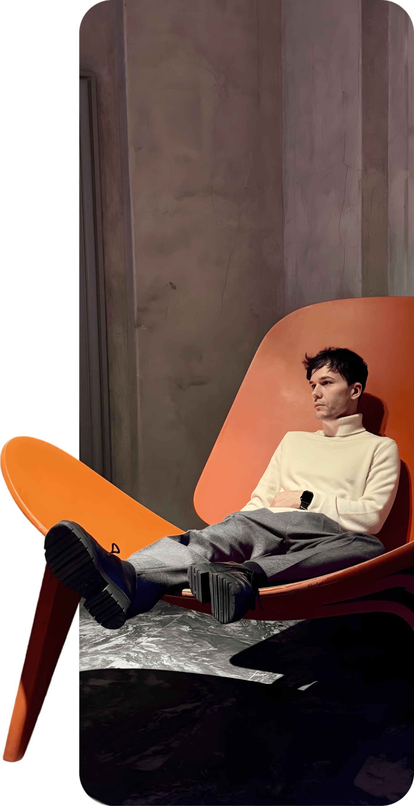

AI-Native Designer
在混乱中建立秩序在确定中寻找锋利
始终走在 AI 浪潮最前沿的探索者，用 AI Agent 与全栈应用打破传统设计的边界
About me
关于我
新时代的斜杠青年设计师。
职业最初的几年，我做的更多是一些基础设计工作。海报、线上活动、运营设计、展会物料、VI、宣传资料……那时候的我，更多是在学习一件事情应该怎么被设计出来。
但随着经历的项目越来越多，我开始慢慢走到设计的前面，也走到设计的后面。
现在面对一个项目，我已经很少只是等别人把完整需求交给我，再开始执行。
这些年我的职位一直是设计师，但我自己很清楚，我对设计这件事的理解已经发生了很大的变化。
从最开始“把设计做好”，到现在更习惯从零开始，把一件事情完整地推到结果。

我是一个以营销为导向的设计师
我越来越在意设计的上下游。
我喜欢这种感觉。
设计是中间那根线，但我会顺着这根线一直往上游和下游走。
也正因为我对这些环节都有一些理解，所以我会特别在意自己的每一个视觉决定。
对我来说，页面上的东西不应该只是“放在这里比较好看”。
每一个像素，都应该有它存在的理由。
我也经历过很多项目最难看的时候，项目并不总是顺利的。
我经历过官网改版，也经历过跨部门非常多、评审迟迟无法确定、周期不断被拉长，甚至一度差点夭折的画册项目。
我觉得一个成熟的设计师，不只是能在顺利的时候把东西做好，也要能在混乱的时候让项目重新往前走。
很多我现在很熟悉的能力，其实都不是专门学来的。
是在一次次卡住、返工、沟通、推翻和重新开始里长出来的。
AI 是我最近几年最着迷的一件事
我非常喜欢学习。
尤其是 AI。
有一段时间研究得最投入的时候，经常一抬头已经凌晨三点多。
我会看课程、研究新的模型、测试新的工具，也会不断想一件事：
它到底能不能真的进入我的工作？
所以我并不满足于“会用 AI 生成一张图”。
我会尝试把它放进调研、文案、视觉生成、AI 视频、设计质检等不同环节，再把真正有效的方法留下来。
后来，我开始把这些方法分享给身边的同事，也会在公司内部做 AI 相关的交流和分享。
再后来，我干脆开始自己做东西。
工作之外，我已经利用 AI 独立完成并上线了三个个人项目。
它们有些和设计直接相关，有些只是来自我自己的兴趣。
但我很喜欢这种探索。
工作之外，我还有另外一些身份
我是一名初级茶艺师。
我非常喜欢茶文化，也喜欢泡茶时那种和工作完全不同的节奏。
设计师的判断力不可能只来自设计软件或者设计网站。
看过什么、学过什么、去过哪里、和什么样的人交流过，最后都会悄悄进入自己的设计里。
工作之外，我会运营自己的小红书和 YouTube。
目前大约做了半年，两个平台累计已经有 8,000+ 粉丝，单条内容最高达到 25 万+ 浏览 / 播放。
我会用 AI 帮助自己完成选题、视觉、视频和内容制作，也会不断观察什么样的内容真的有人愿意停下来、看完、分享。
设计是我最熟悉的能力。
但我希望自己永远不只停在设计里。